Теория
Окружность
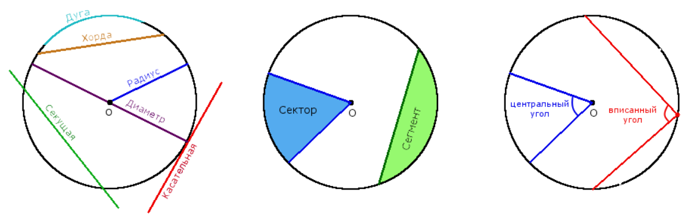Определения:
- Окружность — это совокупность всех точек на плоскости, которые находятся на одинаковом расстоянии от заданной точки О, которая называется центром окружности.
- Круг — часть плоскости, ограничена окружностью.
- Радиус окружности R — расстояние от центра окружности О до любой точки окружности.
- Диаметр окружности D — отрезок, который соединяет две точки окружности и проходит через ее центр.
- Концентрические окружности — окружности с различными радиусами, которые имеют общий центр.
- Кольцо — часть плоскости ограниченная двумя концентрическими окружностями.
- Полуокружность — дуга в которой концы соединены диаметром окружности.
- Полукруг (◓) — часть круга, которая ограничена полуокружностью и диаметром.
Основные свойства окружности:
- Диаметр окружности равен двум радиусам.
D = 2R - Кратчайшее расстояние от центра окружности к секущей (хорде) всегда меньше радиуса.
- Через три точки, которые не лежат на одной прямым, можно провести только одну окружность.
- Среди всех замкнутых кривых с одинаковой длиной, окружность имеет наибольшую площадь.
- Если две окружности соприкасаются в одной точке, то эта точка лежит на прямой, что проходит через центры этих окружностей.
Формулы:
Длина окружности:
L = 2πr = πDПлощадь круга:
S = πr2
Уравнение окружности
1. Уравнение окружности с радиусом r и центром в начале декартовой системы координат:
где R – радиус окружности, а центр окружности расположен в точке (0; 0).
2. Уравнение окружности с радиусом r и центром в точке с координатами (a, b) в декартовой системе координат:
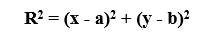где R – радиус окружности, а центр окружности расположен в точке (a; b).
3. Параметрическое уравнение окружности с радиусом r и центром в точке с координатами (a, b) в декартовой системе координат:
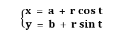Касательная окружности и ее свойства
Определение:
- Касательная окружности - прямая, которая касается окружности только в одной точке.
Основные свойства касательных к окружности:
- Касательная всегда перпендикулярна к радиусу окружности, проведенного в точке соприкосновения.
- Кратчайшее расстояние от центра окружности к касательной равно радиусу окружности.
- Если две касательные, с точками соприкосновения B и C, на одной окружности не параллельны, то они пересекаются в точке A, а отрезок между точкой соприкосновения и точкой пересечения одной касательной равен такому же отрезку на другой касательной: AB = AC
- Если провести прямую через центр окружности О и точку пересечения касательных A, то углы образованные между этой прямой и касательными будут равны: ∠ОAС = ∠OAB
Секущая окружности и ее свойства
Определение:
- Секущая окружности - прямая, которая проходит через две точки окружности.
Основные свойства секущих:
- Если из точки вне окружности Q выходят две секущие, которые пересекают окружность в двух точках A и B для одной секущей и C и D для другой секущей, то произведения отрезков двух секущих равны между собою: AQ ∙ BQ = CQ ∙ DQ.
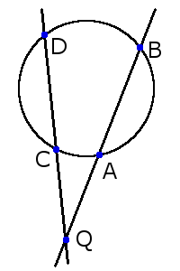 - Если из точки вне окружности Q выходит секущая прямая, что пересекает окружность в двух точках A и B, и касательная с точкой соприкосновения C, то произведение отрезков секущей равна квадрату длины отрезка касательной: AQ ∙ BQ = CQ2
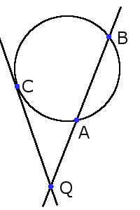
Хорда окружности ее длина и свойства
Определение:
- Хорда окружности - отрезок, который соединяет две точки окружности.
Длина хорды:
1. Длина хорды через центральный угол и радиус:
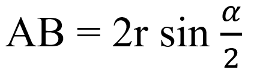
2. Длина хорды через вписанный угол и радиус:
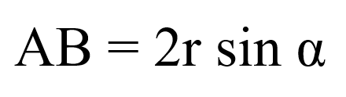
Основные свойства хорд:
- Две одинаковые хорды стягивают две одинаковые дуги: если хорды AB = CD, то дуги ◡ AB = ◡ CD.
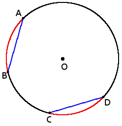 - Если хорды параллельные, то дуги между ними будут одинаковые: если хорды AB ∣∣ CD, то ◡ AD = ◡ BC.
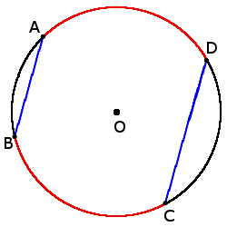 - Если радиус окружности перпендикулярен к хорде, то он разделяет хорду пополам в точке их пересечения: если OD ┴ AB, то AC = BC.
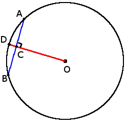 - Если две хорды AB и CD пересекаются в точке Q, то произведение отрезков, что образовались при пересечении, одной хорды равны произведению отрезков другой хорды: AQ ∙ BQ = DQ ∙ QC.
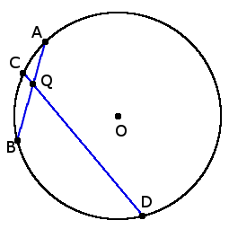 - Хорды с одинаковой длиной находятся на одинаковом расстоянии от центра окружности: если хорды AB = CD, то ON = OK.
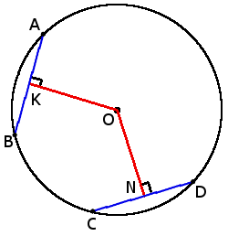 - Чем больше хорда тем ближе она к центру: если CD > AB, то ON < OK.
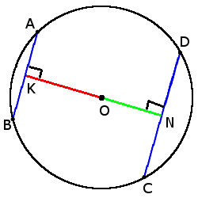
Центральный угол, вписанный угол
Определение:
- Центральный угол окружности - угол, вершиной которого есть центр окружности.
- Угол вписанный в окружность - угол, вершина которого лежит на окружности, а стороны угла пересекают окружность.
Основные свойства углов:
- Все вписанные углы, которые опираются на одну дугу - равны.
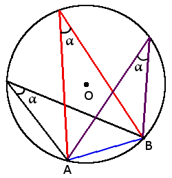 - Вписанный угол, который опирается на диаметр будет прямым (90°).
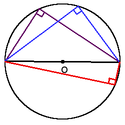 - Вписанный угол равен половине центрального угла, что опирается на ту же дугу: β = 2∙α.
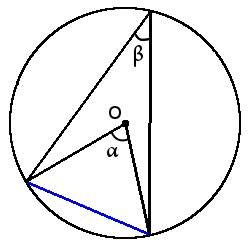 - Если два вписанных угла опираются на одну хорду и находятся по различные стороны от нее, то сумма этих углов равна 180°: α + β = 180°
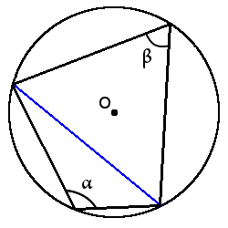 - 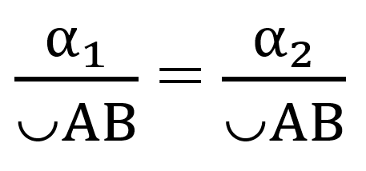
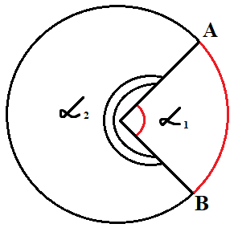
Дуга окружности
Определение:
- Дуга окружности (◡) - часть окружности, которая соединяет две точки на окружности.
- Градусная мера дуги - угол между двумя радиусами, которые ограничивают эту дугу. Градусная мера дуги всегда равна градусной мере центрального угла, который ограничивает эту дугу своими сторонами.
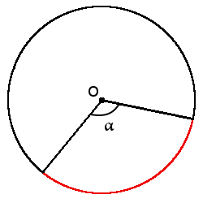
Формула длины дуги через центральный угол (в градусах):
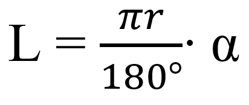Cектор
Определение:
- Сектор (◔) - часть круга, которая ограничена двумя радиусами и дугой между этими радиусами.
Формула площади секторa через центральный угол (в градусах):
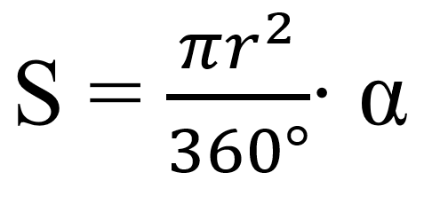Сегмент
Определение:
- Сегмент - часть круга, которая ограничена дугой и хордой, что соединяет ее концы.
Площадь сегмента:
Sсегмента = Sсектора – SAOB
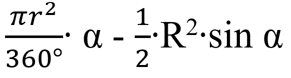
Практика
1. Точка О — центр окружности, ∠AOB = 84° (см. рисунок). Найдите величину угла ACB (в градусах).
Показать решение2. В окружности с центром в точке О проведены диаметры AD и BC, угол OCD равен 30°. Найдите величину угла OAB.
Показать решение3. Окружность с радиусом равным 39 вписана в квадрат. Найдите площадь квадрата.
Показать решение4. Боковая сторона равнобедренного треугольника равна 5. Угол при вершине, противолежащий основанию, равен 120°. Найдите диаметр окружности, описанной около этого треугольника.
Показать решение5. В окружность вписан равносторонний восьмиугольник. Найдите величину угла ABC.
Показать решение